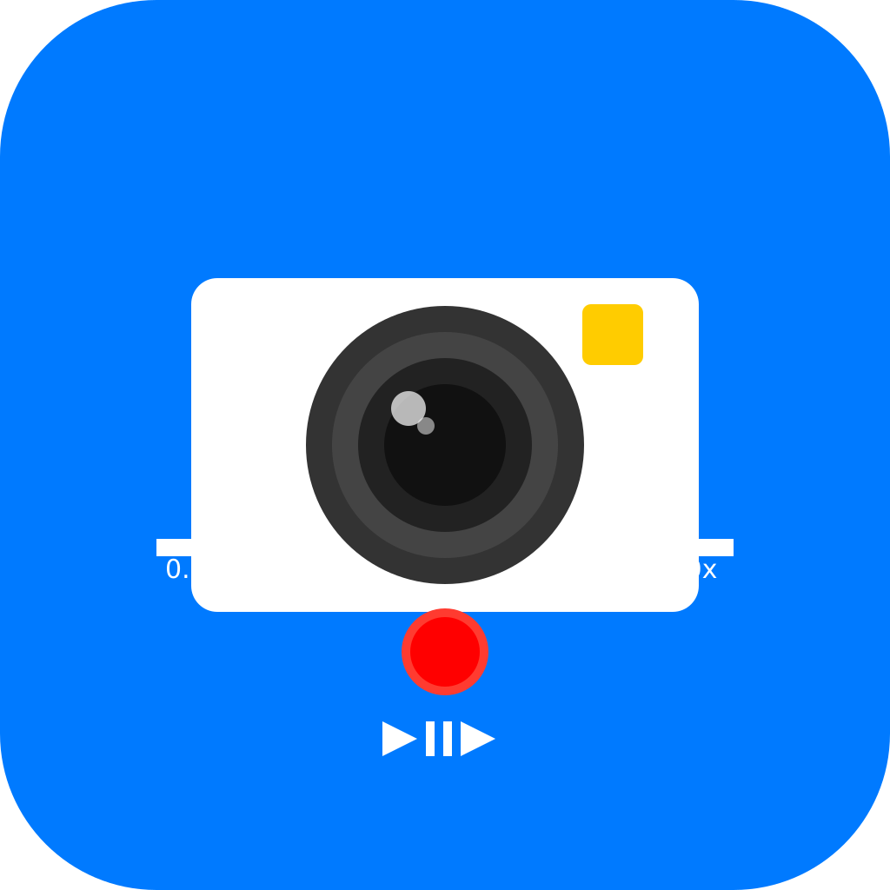

SimpleCapture
A native iOS application for recording and playing back high-quality slow-motion videos. SimpleCapture is designed with simplicity and performance in mind, offering professional-grade slow-motion capabilities in an easy-to-use interface.
SimpleCapture provides frame rates up to 120 FPS, adjustable recording duration from 5-30 seconds, and precise playback speed control from 0.25x to 2.0x, making it perfect for analyzing sports movements, capturing fast action, or creating artistic slow-motion effects.
Download Xcode Project
Key Features
- Record videos at 60 FPS or 120 FPS for professional slow-motion effects
- Adjustable recording duration from 5 to 30 seconds
- Precise playback speed control from 0.25x to 2.0x
- Camera switching between front and back cameras
- Portrait orientation optimized UI for better user experience
- High-quality video recording with optimal compression
Requirements
- iOS 14.0+
- Xcode 12.0+
- iPhone with front and back camera (simulator is not supported due to camera requirements)
Installation Instructions
- Download the Xcode project by clicking the button above
- Unzip the file and open SimpleCapture.xcodeproj in Xcode
- Select your development team in the Signing & Capabilities tab
- Build and run on a physical device (camera functionality requires a real device)
Usage
- Grant camera permissions when prompted on first launch
- Use the red button to start/stop recording
- Access settings with the gear icon to adjust frame rate and recording duration
- Switch between front and back cameras using the camera switch button
- After recording, use the slider to adjust playback speed from 0.25x to 2.0x
- Tap the record button again to return to camera mode and make a new recording